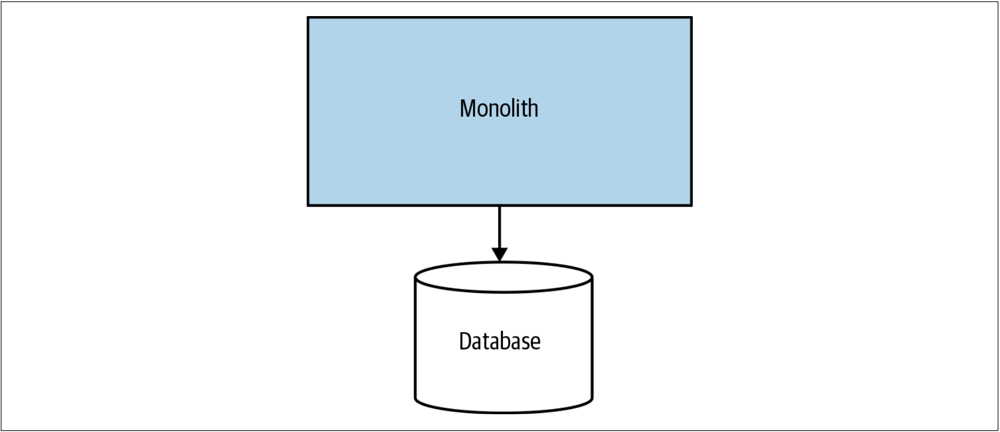
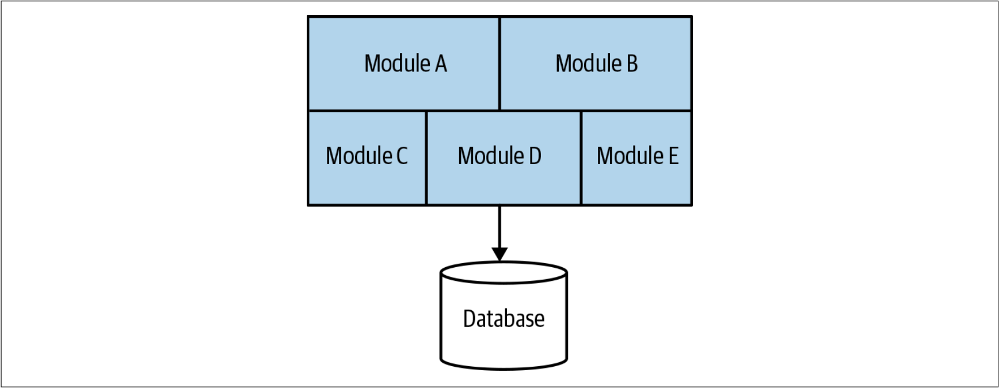
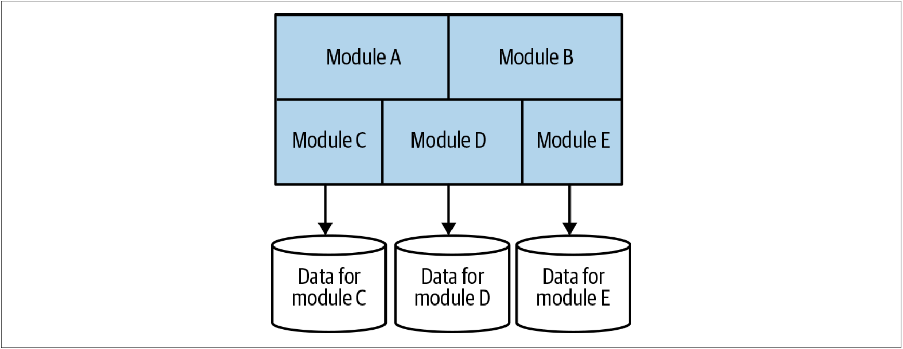

单体应用
我们已经介绍过微服务的相关内容，但是本书讨论的是：从单体迁移到微服务。因此，我们还需要确定“单体”的含义。
当我在本书中谈到“单体”时，我主要指的是一个部署单元。当系统中的所有功能必须一起部署时，将其视为一个单体。符合这一要求的单体系统至少有三种类型：单进程（single-process）系统译注1，分布式单体（distributed monolith）系统和第三方黑盒（third-party black-box）系统。
单进程的单体应用
讨论单体时，能想到的、最常见的例子是这样一个系统：所有的代码都作为程序而部署，如图1-6所示。我们可能会拥有该程序的多个实例以保证程序的鲁棒或扩展。但是，从根本上讲，所有的代码都打包在一个程序中。这些单进程系统几乎总是从数据库中读取数据或将数据存储到数据库。因此，实际上，他们本身就可以构成简单的分布式系统。

图1-6. 单进程单体应用：所有的代码都被打包进一个进程
我所能看到的、人们与之斗争的单体系统，大多数都是属于这种单进程的单体系统。因此，我们会花费大部分时间来重点关注单进程的单体系统。从现在开始，除非另有说明，“单体”的含义均为这种单进程的单体系统。
模块化单体
模块化单体是单进程单体的一种变体：单个程序由独立的模块组成，每个模块都可以独立工作，但仍需要组合到一起才能部署，如图1-7所示。把软件拆分为模块的概念并不新鲜，我们会在本章后面再回顾模块化的一些历史。

图1-7. 模块化的单体结构：程序中的代码被拆分为不同的模块
对于很多组织而言，模块化单体是一个不错的选择。如果模块的边界定义良好，则可以进行高度并行的工作。不过，模块化单体在避免更加分布式的微服务架构所带来的挑战时，也无法获得微服务部署更简单的优势。Shopify是使用模块化单体技术来代替微服务架构的一个很好的例子，并且对于该公司而言，模块化的单体架构看起来运作良好。3
模块化单体的挑战之一是：数据库往往很少在代码层面拆分。这回导致，如果将来想要取消单体架构时，我们可能会面临重大挑战。我看到过有些团队试图通过把数据库拆分到和模块对齐的方式，来进一步推动模块化单体，如图1-8所示。从根本上讲，即使我们可以采用图1-8的方式让代码独立，但是对现有的单体进行图1-8所示的改造仍然具有很大的挑战性。如果想尝试做类似的事情，在第4章中探讨的许多模式可以为我们提供帮助。

图1-8. 具有数据库拆分的模块化单体
分布式的单体应用
第三方的黑盒系统
单体应用的挑战
单体应用的优势
3. For an overview of Shopify’s thinking behind the use of a modular monolith rather than microservices, Kirs‐ ten Westeinde’s talk on YouTube has some useful insights. ↩
译注1. 单进程系统并不意味该系统只有一个进程在工作。 ↩